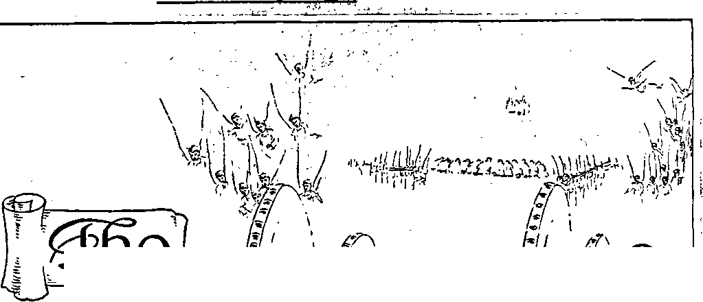

Wl'f
4’-
Vol. LXII
Semimonthly
No. 15
AUGUST 1, 1941
,1-1
Ml JI -'it!
— UJ
r
CONTENTS
When the Righteous Rule .. ..
Mourn ..........
The Wicked.....
Visible Rulers..................
Valiant Fighters .......... . ..
The Promise .........
Resurrection ...................
“In All the Earth”................
Be Wise ..........................
Assembly in St. Louis..................
God and Man ...............................
Proxy ............................................
Field Experiences ...............
ft
+
4
,r
“Pure Language” Testimony Period .. Notice of Annual Meeting .........
Notice to British
“Watchtower” Subscribers ........
“Watchtower” Studies ......................
Vacation ................................................
227
227
09Q
229
. 232
232
. 234
.. .. 234
. . 235
...... 235
.... 236
......237
..... 240
. 226
. 226
Ea
.. 226 ... 226 . .226
©wtb.vts:
1
-“xsAaa wa w *
Published Semimonthly By
WATCH TOWER BIBLE & TRACT SOCIETY 117 Adams Street • » Brooklyn, N.Y., U.S.A.
OFFICERS
J. F. Rutherford, President W. E. Van Amburgh, Secretary “And all thy children shall be taught of Jehovah; and great shall be the peace of thy children.” - Isaiah 34:13.
THE SCRIPTURES CLEARLY TEACH
THAT JEHOVAH is the only true God, is from everlasting to everlasting, the Maker of heaven and earth and the Giver of life to his creatures; that the Logos was the beginning of his creation, and his active agent in the creation of all things; that the Logos Is now the Lord Jesus Christ in glory, clothed with all power In heaven and earth, and the Chief Executive Officer of Jehovah.
THAT GOD created the earth for man, created perfect man for the earth and placed him upon it; that man willfully disobeyed God’s law and was sentenced to death; that by reason of Adam’s wrong act all men are born sinners and without the right to life.
THAT JESUS was made human, and the man Jesus suffered death in order to produce the ransom or redemptive price for obedient ones of mankind; that God raised up Jesus divine and exalted him to heaven above every creature and above every name and clothed him with all power and authority.
THAT JEHOVAH’S ORGANIZATION is a Theocracy called Zion, and that Christ Jesus is the Chief Officer thereof and is the rightful King of the world; that the anointed and faithful followers of Christ Jesus are children of Zion, members of Jehovah’s organization, and are his witnesses whose duty and privilege It Is to testify to the supremacy of Jehovah, declare his purposes toward mankind as expressed in the Bible, and to bear the fruits of the kingdom before all who will hear.
THAT THE WORLD has ended, and the Lord Jesus Christ has been placed by Jehovah upon his throne of authority, has ousted Satan from heaven and is proceeding to the establishment of God’s kingdom on earth.
THAT THE RELIEF and blessings of the peoples of earth can come only by and through Jehovah’s kingdom under Christ, which has now begun; that the Lord’s next great act is the destruction of Satan’s organization and the establishment of righteousness in the earth, and that under the kingdom the people of good will that survive Armageddon shall carry out the divine mandate to “fill the earth” with a righteous race.
ITS MISSION
THIS journal Is published for the purpose Of enabling the people to know Jehovah God and his purposes as expressed in the Bible. It publishes Bible instruction specifically designed to aid Jehovah’s witnesses and all people of good wilL It arranges systematic Bible study for its readers and the Society supplies other literature to aid In such studies. It publishes suitable material for radio broadcasting and for other means of public Instruction in the Scriptures.
It adheres strictly to the Bible as authority for its utterances. It is entirely free and separate from all religion, parties, sects or other worldly organizations. It is wholly and without reservation for the kingdom of Jehovah God under Christ his beloved King. It is not dogmatic, but invites careful and critical examination of its contents in the light of the Scriptures. It does not indulge in controversy, and its columns are not open to personalities.
Yearly Subscription Price
United States, $1.00; Canada and Miscellaneous Foreion. $1.50; Great Britain, Australasia, and South Africa, 6s. American remittances should be made by Postal or Express Money Order or by Bank Draft Canadian, British, South African and Australasian remittances should be made direct to the respective branch offices. Remittances from countries other than those mentioned may be made to the Brooklyn office, but by International Postal Money Order only.
Foreign Offices
British 34 Craven Terrace, London, W.2, England Canadian 40 Irwin Avenue, Toronto 5, Ontario, Canada
Australasian__________________7 Beresford Road, Strathfleld, N. S. W., Australia
South African ____________________Boston House, Cape Town, South Africa
Please address the Society in every case.
(Translations of this journal appear in several languages.)
All sincere students of the Bible who by reason of infirmity, poverty or adversity are unable to pay the subscription price may have The Watchtower free upon written application to the publishers, made once each year, stating the reason for so requesting it. We are glad to thus aid the needy, but the written application once each year is required by the postal regulations.
Notice to Subscribers: Acknowledgment of a new or a renewal subscription will be sent only when requested. Change of address, when requested, may be expected to appear on address label within one month A renewal blank (carrying notice of expiration) will be sent with the journal one month before the subscription expires.
Entered as second-class matter at the post office at Brooklyn, N. Y., under the Act of March S, 1879.
“PURE LANGUAGE” TESTIMONY PERIOD
The midsummer Testimony Period, as above named, will include all of August The Lord now having turned to his devoted people the “pure language” of the truth of The Theocracy, it will be their privilege during August to publish the same with a “pure lip”, that a multitude of others may hear and turn from religion and join in the united service of Jehovah. Therefore during this Testimony Period the book Religion together with the latest published booklet will be placed with everyone possible, on a contribution of 25c. This, which is generally the vacation season and convention time, should allow for many newly interested ones to start out into the field activity, and for all veteran publishers to get in their full quota of hours. A good report is awaited from each and all at the close of August, marking the special blessing of the Lord upon all that “serve him with one consent”.
NOTICE OF ANNUAL MEETING
Pursuant to the provision of law and the charter of the Watch Tower Bible & Tract Society, notice is hereby given that the annual business meeting of the said Society will be held at Pittsburgh, North Side (formerly Allegheny), Pennsylvania, at ten o’clock a.m., Wednesday, October 1, 1941, at which the usual annual business will be transacted. See pages 237,238 herein.
NOTICE TO BRITISH “WATCHTOWER” SUBSCRIBERS
Subscribers for The Watchtower in Britain who fail to receive a copy after eight weeks of the date of issue may write to the London office, 34 Craven Terrace, London, W. 2, England, stating they have failed to receive that particular issue of The Watchtower, and the London office will try to furnish them with the missing issue, if possible. It is our desire to get to every subscriber the contents of each issue of The Watchtower, because we know that to the reader it is a great aid and comfort in these perilous times.
“WATCHTOWER” STUDIES
Week of September 7: “When the Righteous Rule,” fl 1-33 inclusive, The Watchtower August 1, 1941.
Week of September 14: “When the Righteous Rule,” fl 34-63 inclusive, The Watchtower August 1, 1941.
VACATION
The members of the Bethel family will enjoy their vacation this year from Saturday, August 2, to Wednesday, August 20, inclusive. This will afford them a change from their regular work at headquarters and the opportunity for a larger part in the in-
( Continued on -page 239)
Vol. LXII August 1, 1941 N°- 15
"When the righteous are in authority, the people rejoice; but when the wicked beareth rule, the people mourn."—Prov. 29:2.
"TEHOVAH places before men the information that I all, if they would, might know why there is so J much mourning, sorrow and distress throughout the earth at the present time. He also tells what will bring peace, contentment and joy to the people. That desirable information is set forth fully in the Bible, which is God’s Word of truth, and the Bible is published in all known languages and dialects. The rulers and leaders in the nations have no excuse for not knowing what God has laid before mankind, as set forth in his Word. The religious teachers have had every opportunity to learn for themselves and to inform the people concerning these vital truths, but they have shunned the true information. They have had ample opportunity to inform the political and commercial leaders of the world as to the real cause of sorrow and distress in the nations and what is the only possible remedy. Such opportunity they have ignored, and, going still farther in the wrong way, they have joined hands with the political and commercial elements to carry out selfish purposes of man. They have forgotten God and his Word and turned to demonism.
2 God provided for his typical covenant people, the Israelites, the office of the priesthood and laid upon the priests the obligation and duty to be obedient to his law and to instruct others. They were commanded to instruct the people of things pertaining to the law. “For the priest’s lips should keep knowledge, and they should seek the law at his mouth; for he is the messenger of the Lord of hosts.”—Mal. 2:7.
3 The nations called “Christendom” have pretended to be the representatives of God, and therefore have been in an implied covenant to do the will of God. It has been the duty of the leaders of “Christendom” to properly inform themselves and to instruct the people concerning God’s law and purpose, but in that they have entirely failed. As with the Israelites, so with “Christendom’s” leaders; they have departed out of the way of righteousness and have caused many to stumble at the law of God. (Mal. 2:8) The leaders in “Christendom”, and particularly the clergy, have refused sound doctrine and have turned to fables, even as the Lord’s Word foretold they would do in these last days of peril.—2 Tim. 4: 3, 4.
‘ The religious leaders and their followers are all influenced by the demons, and both clergy and laymen walk on in darkness. The result now is as God's prophet recorded: ‘Darkness covers the earth, and gross darkness the people.’ Who will understand?
5 What is set forth herein is taken from the Word of God, and the clergy refuse to believe what is here published. They are blind and cannot understand. The political and commercial leaders refuse to give heed to the truth because they have hired the clergy to do their thinking in matters pertaining to religion, but all of them think in terms of religion. They too are blind as to God’s purpose. Who, then, can understand? Almighty God answers: “Many shall be purified, and made white, and tried; but the wicked shall do wickedly; and none of the wicked shall understand ; but the wise shall understand.”—Dan. 12: 10.
6 Only the wise after the wisdom from the Lord will understand. Who are they that are purified, made white and tried, as stated by God’s prophet? Such are those who are in Christ Jesus, who constitute “the remnant” of Jehovah’s spiritual people now on the earth, and who are wholly devoted to God. Who are the wise? In addition to “the remnant” all persons of good-will toward God now are granted the opportunity of understanding Jehovah’s purpose. The Lord is now gathering unto himself his “other sheep”, all of which shall understand; otherwise they could not be of his “other sheep”. For the instruction, aid and comfort of those who are of good-will toward God, and who are seeking the way to life, the information herein contained, and which is taken from the Bible, is published in The Watchtower.
MOURN
’ In every nation now on earth the people mourn. Daily their distress increases and will continue to increase until the present wicked rule is destroyed. The fact that all nations mourn is proof that the wicked rule. In the year 1914 what is known as the World War began. Prior to that time the people had
much sorrow, but from and after 1914 the woes upon the nations and peoples of the earth have increased with each and every year. Those people of good-will toward God will believe his Word; and the Word of God says concerning the mourning that is upon the nations: ‘When the wicked beareth rule, the people mourn.” This .scripture, together with the facts well known to all, should be sufficient proof that the wicked now rule, and this shows the reason why there is an ever-increasing time of mourning and sorrow and woe upon the peoples at this time. But why is the woe and mourning increased since the time that the World War began! The reason is that 1914 marked the end of the uninterrupted rule of Satan. At that time he was cast down to earth; and he has confined his operations to the nations of the earth since. Hence the Word of God says: ‘Woe to the inhabiters of the earth, and of the sea! for the devil is come down unto you, having great wrath, because he knoweth that he hath but a short time.”—Rev. 12:12.
8 But what has the Devil to do with the rule of the nations of earth now and with the ever-increasing woe? The Devil is the supreme wicked one and for centuries has been the invisible ruler of the nations of the earth, during which time he has operated through visible representatives on the earth, who, being selfish and under his influence, have refused to hear and to obey the Word of Almighty God, and hence have ruled wrongfully. Now the uninterrupted rule of the Devil is ending, and hence, as .the Scriptures state, the Devil and his visible representatives bring ever-increasing woe upon the people because the climax is at hand.
’ Never at any period of time have the people of all the nations been in such distress as now. The daily increase of woes upon the nations causes men’s hearts to fail them for fear, and hence many seek death rather than to endure suffering. That explains the suicides. Such persons see no hope, because they are without knowledge and without God. Religionists offer the people nothing upon which they could base their hope. The sincere people now discern that the wicked and ambitious Hitler is a religionist, bent on establishing a religious rule of the world, and in this he has the unqualified support of the largest religious institution in existence, the head of which claims to be the spiritual ruler of the world. Among the people there are still a number who have faith in the Word of God and who are of good-will toward God, and such persons are now becoming enlightened, shunning religion, turning away from it, and seeking knowledge from the Word of God. It is the desire of The Watchtower to aid such. It is needless to introduce evidence showing that the wicked now rule the nations of the earth, but attention is called to it in order that those of good-will may see the privilege of taking advantage of God’s provision to learn the Scriptures, find the way of escape to the place of safety, and learn how the wicked came into power and rule and what is the remedy therefor.
THE WICKED
10 The wicked one, who is the invisible ruler of the world, is Satan the Devil. Originally his name was Lucifer. Almighty God appointed Lucifer as overseer of the earth, and when Lucifer rebelled God did not deprive him of his rulership. On the contrary, God said to Satan: ‘For this cause have I permitted thee to remain, for to shew thee my power; and that my name may be declared throughout all the earth.’ —Ex. 9:16, Leeser.
11 Satan has continued to exercise his power and influence over humankind, and thus God has permitted Satan to have full opportunity to prove his wicked challenge, that he could turn all men against God. (Job 2: 5) The climax is now here. Satan knows that his time is short, and hence he increases the woes upon the people before the final showdown.
” As further proof that Satan has continued to bear rule over the nations the following Scriptural proof is submitted. Immediately following the baptism of Jesus he was led by the spirit of God into the mountain and was there subjected to a severe test at the hands of the Devil in the Devil’s effort to cause him to violate his covenant with Jehovah. (Matt. 4:3-11) The Devil put three major tests before Jesus, who was then fasting. He challenged Jesus to make bread out of a stone. He challenged him to leap from the pinnacle of the temple to prove his superiority over men. “Again, the devil taketh him up into an exceeding high mountain, and sheweth him all the kingdoms of the world, and the glory of them; and saith unto him, All these things will I give thee, if thou wilt fall down and worship me. Then saith Jesus unto him, Get thee hence, Satan: for it is written, Thou shalt worship the Lord thy God, and him only shalt thou serve.”—Matt. 4: 8-10.
18 This shows that Satan was then the invisible ruler of the nations of the earth. Thereafter Jesus spoke of Satan as the prince or ruler of this world. (John 12:31; 14:30; 16:11) Still later the apostle Paul spoke of the Devil as the god of this world who blinds the people from hearing the truth: “But if our gospel be hid, it is hid to them that are lost; in whom the god of this world hath blinded the minds of them which believe not, lest the light of the glorious gospel of Christ, who is the image of God, should shine unto them.” (2 Cor. 4: 3,4) Again the scripture says that the entire world lies in that wicked one.—1 John 5:19.
14 The visible rulers of the nations of the earth are chiefly these: religious, political and commercial men; but, in fact, all of them practice religion. To turn men away from God the Devil brought forth religion and by this has deceived many. The political element yields to the religious influence and also practices religion to aid in keeping the ruled in subjection. The commercial elements work with religious and political elements in order to accomplish their selfish and pecuniary gain. All three elements love money and power, and all are against Jehovah and his kingdom; hence all are wicked, and the result is exactly as the Lord God foretold: ‘The wicked rule, and the people mourn’ because of the injustices in the earth.
CHANGE
15 Will the present sorrowful state of affairs continue forever or will there be a change in the near future? There is certain to be a change. The fact that Almighty God says, “When the righteous are in authority the people rejoice,” is of itself proof sufficient that in God’s due time the righteous shall be in authority. When the Word of God is considered in the light of existing facts it is seen by those of goodwill that a change is now taking place. In 1914 God enthroned his King, Christ Jesus, and sent him forth to rule while the wicked one is still exercising his power. The righteous Ruler is Christ Jesus, and his work first performed as King is to cause a witness to be given in the earth of and concerning the kingdom of righteousness, and then to completely oust the wicked from rule, and this he will do at Armageddon ; and all the facts and the Scriptures show that that great event is near at hand. That will be a climax of the world’s trouble. That battle of the great day of God Almighty will for ever end the rule of the wicked. All the wicked God will destroy. (Ps. 145: 20) Affliction shall not again rise up. (Nah. 1: 9) Henceforth Christ Jesus, “the Prince of Peace,” will reign, and his reign will be entirely righteous.—Isa. 9: 6, 7.
16 The righteous ruler, Christ Jesus, shall ever be invisible to human eyes, but will have his representatives acting in righteousness that will be visible to human eyes. Almighty God Jehovah is the King of Eternity and is invisible. Christ Jesus is “the express image” of Jehovah and likewise invisible to human eyes. He is Jehovah’s duly anointed King of The Theocratic Government.—1 Tim. 1:17; Heb. 1:3; Ex. 33: 20; 1 Tim. 6:16; John 14:19; Col. 1:13-15.
VISIBLE RULERS
17 God has given his word that there shall be a new heaven and a new earth wherein righteousness shall continue forever. (2 Pet. 3:13) That means that the rule of the earth, both invisible and also visible, shall be in righteousness. Concerning that it is written: “Behold, a king [Christ Jesus, the King of The Theocratic Government] shall reign in righteousness, and princes shall rule in justice [righteousness].” —Isa. 32:1, Leeser.
18 “Princes,” or governors, are those who exercise a ruling power under the command and supervision of the higher power. The new heaven is the new invisible ruling power, whereas the new earth is the rule of the people by visible representatives of the supreme and invisible power. Since the new heaven and new earth is a rule of righteousness, it follows that there must be men fully qualified to fill the place of visible rulership. They must be righteous. Who could possibly qualify and fill those places of world importance?
18 God has fixed the rules by which men can qualify, and all who are placed by the Lord in positions to rule and administer the laws of The Theocracy must act under The Theocracy and must first qualify according to the divine rules. All such must have full faith in God and in Christ Jesus and all be subject to crucial tests in order to prove their faithfulness. The Bible furnishes the complete information concerning those who shall qualify and who shall occupy the positions as the visible representatives of The Theocracy. It is that rule invisible and visible, or rule of righteousness, that shall bring great joy to the people.
20 Herein is set forth a list of men, which men met the requirements laid down by Jehovah that they might be qualified representatives of The Theocratic Government.
21 Abel, the second son of Adam and Eve, was the first man on the earth to show faith in the Almighty God. God never forgets a faithful creature. It was Abel’s faith and obedience that pleased God. (Gen. 4:4) “By faith Abel offered unto God a more excellent sacrifice than Cain, by which he obtained witness that he was righteous, God testifying of his gifts ; and by it he, being dead, yet speaketh."—Heb. 11: 4.
22 God counted Abel a righteous man because of his faith. Abel was murdered at the instance of the Devil, and every murder that has been committed on earth has been done at the instance of the Devil. Concerning Abel’s righteousness and God’s purpose to punish those who have practiced religion and used it to bring about the murder of many others, Jesus Christ said to the religionists on earth at his time: “Wherefore, behold, I send unto you prophets, and wise men, and scribes: and some of them ye shall kill and crucify; and some of them shall ye scourge in your synagogues, and persecute them from city to city: that upon you may come all the righteous blood shed upon the earth, from the blood of righteous Abel unto the blood of Zacharias son of Barachias, whom ye slew between the temple and the altar.” (Matt. 23: 34, 35) Abel was a good and faithful man; and it is written that they that have done good shall be resurrected. (John 5:29) God has a place for Abel.
28 The next man who had faith in God was Enoch. When it is said that a man walks with God, that means that his course of action is in harmony with God’s appointed way or rules. Long ago it was written of Enoch: “And Enoch walked with God; and he was not, for God took him.” (Gen. 5: 24) God did not permit the Devil to kill Enoch, and because of Enoch’s faith God took him away: “By faith Enoch was translated that he should not see death; and was not found, because God had translated him; for before his translation he had this testimony, that he pleased God.” (Heb. 11:5) Enoch prophesied that the Lord Jesus Christ, at his coming and his kingdom, will punish those who have fought against God. (Jude 14,15) It was Enoch’s faith that pleased God, and therefore God has a place for Enoch. It is written in connection with him and other faithful creatures : “But without faith it is impossible to please him; for he that cometh to God must believe that he is, and that he is a rewarder of them that diligently seek him.”—Heb. 11: 6.
24 Because of faith God counted Noah a righteous man; and Noah walked with God. (Gen. 6:9) In Noah’s day the human race had become exceedingly wicked and filled the earth with violence. God informed Noah of his purpose to destroy that wicked generation; and Noah obeyed the Lord God, and was saved from that destruction and brought over to the world beginning thereafter: “By faith Noah, being warned of God of things not seen as yet, moved with fear, prepared an ark to the saving of his house; by the which he condemned the world, and became heir of the righteousness which is by faith.” (Heb. 11:7) That blessing of Noah and his family was because of his faith. God has a further blessing for Noah, yet to be received.
25 Abraham resided in the land of Ur when God directed him to move into a land about which Abraham knew nothing. Having faith in God, Abraham obeyed and went into the strange land. Concerning him and his faith it is written: “By faith Abraham, when he was called to go out into a place which he should after receive for an inheritance, obeyed; and he went out, not knowing whither he went.”—Heb. 11: 8.
26 In that strange land of Canaan God made a covenant with Abraham and caused Abraham to perform his part in a great prophetic drama, wherein Abraham pictured God himself, and in which Abraham’s son Isaac played a part picturing the coming of Christ Jesus and his great sacrifice. “For what saith the scripture! Abraham believed God, and it was counted unto him for righteousness.”—Rom. 4: 3.
27 Thereafter Abraham was called “the Friend of God”. (Jas. 2:23) Abraham by faith saw the day coming when God would have his kingdom in operation under Christ Jesus the Messiah, and that filled his heart with joy. Jesus referred to this when he said: “Abraham rejoiced to see my day: and he saw it, and was glad.” (John 8: 56) The Bible magnifies the importance of faith and obedience unto God by frequent reference to the faith of Abraham, who is called ‘the father of the faithful’. “Even as Abraham believed God, and it was accounted to him for righteousness. Know ye therefore that they which are of faith, the same are the children of Abraham.”— Gal. 3:6,7.
28 Abraham was swift to obey God; and that meant he was ready and willing, upon short notice, to move, and also shows that he had no fixed abiding place on the earth but was looking for a better place. He dwelt in tents and with his sons and grandsons; concerning which it is written: “By faith he sojourned in the land of promise, as in a strange country, dwelling in tabernacles with Isaac and Jacob, the heirs with him of the same promise: for he looked for a city which hath foundations, whose builder and maker is God.” —Heb. 11: 9,10.
28 Abraham had faith in God’s government of righteousness, The Theocracy, which is symbolized by a city, and God has fixed a place for Abraham. Sarah, his wife, was old and past the age of childbearing. She had no children, but when God sent his angel and informed Sarah that she would give birth to a son Sarah had faith in God’s promise and God blessed her: “Through faith also Sara herself received strength to conceive seed, and was delivered of a child when she was past age, because she judged him faithful who had promised. Therefore sprang there even of one, and him as good as dead, so many as the stars of the sky in multitude, and as the sand which is by the sea shore innumerable.”— Heb. 11:11,12.
80 Abraham and Sarah’s only son Isaac grew to manhood’s estate, and then God put a great test upon Abraham. God commanded Abraham to offer his son upon a fiery altar of sacrifice. Under that great test Abraham exhibited strong faith in God. “By faith Abraham, when he was tried, offered up Isaac; and he that had received the promises offered up his only begotten son, of whom it was said, That in Isaac shall thy seed be called; accounting that God was able to raise him up, even from the dead; from whence also he received him in a figure.” (Heb. 11:17-19; Gen. 22: 9-18) It was on that occasion that Abraham and Isaac performed their parts in the great prophetic drama foretelling the sacrificial death and resurrection of the beloved Son of Jehovah God.
81 Faithful Isaac was also used of God to foreshadow the seed of promise, that is to say, those who would be made partakers of the great Theocracy. (Gal. 4: 28) The Scriptures tell of the faith of Isaac and of Jacob, who, because of their faith and obedience unto God, became heirs to the promise of God made first to Abraham, and concerning this it is written : “By faith Isaac blessed Jacob and Esau concerning things to come. By faith Jacob, when he was a dying, blessed both the sons of Joseph; and worshipped, leaning upon the top of his staff.”—Heb. 11:20, 21.
32 Moving on in the development of the typical Theocracy and looking further to the great and real Theocratic Government, the Holy City that shall rule the world in righteousness, God makes note of the faith and faithfulness of Joseph, the beloved son of Jacob. Then he makes mention of Moses, who also was there used as a type of Christ Jesus. Moses was reared by the royal family of Egypt; but upon receiving instruction from God, and having faith in God’s promise, he refused to be called the son of Pharaoh’s daughter and devoted himself to the service of Jehovah. “Choosing rather to suffer affliction with the people of God, than to enjoy the pleasures of sin for a season ; esteeming the reproach of Christ greater riches than the treasures in Egypt: for he had respect unto the recompence of the reward. By faith he forsook Egypt, not fearing the wrath of the king: for he endured, as seeing him who is invisible.” —Heb. 11:25-27.
33 By faith he saw the coming Theocracy and devoted his life to the service of God. He was chosen of God to lead the Israelites out of Egypt, and in this he played the part in one of Jehovah’s great prophetic dramas foretelling the deliverance of God’s faithful people from the power and oppression of Satan’s organization. “Through faith he kept the passover, and the sprinkling of blood, lest he that destroyed the firstborn should touch them. By faith they passed through the Red sea as by dry land; which the Egvptians assaying to do were drowned.” —Heb. 11: 28, 29.
34 Joshua succeeded to the place once occupied by Moses. He received command from Almighty God to lead the Israelites into Canaan, and in doing so God worked a great miracle, causing the raging waters of the Jordan river to stand still while Joshua led the host of Israel, and they marched over dry-shod into safety. (See Joshua chapter 3.) At God’s command Joshua led the Israelites around the walled city of Jericho, behind which walls the enemies of God’s people hid for safety, and it was God who threw down those walls; and concerning the faith of Joshua and those who were with him it is written: “By faith the walls of Jericho fell down, after they were compassed about seven days.”—Heb. 11: 30.
35 God would have it known that even harlots can turn away from a wrongful course and find the way of life, whereas those who practice religion and refuse to obey God fail to find life. (Matt. 21: 31) In Jericho resided a woman named Rahab, who was engaged in keeping a bawdyhouse. She learned of Jehovah’s power and his blessing upon those who have faith in him and who serve Jehovah God. Upon learning these truths she readily made a covenant with God’s servants to shield and protect them, and she exhibited her faith in God by agreeing to do what they requested her to do to protect them. Thereby she played a part in a prophetic drama foretelling that in the present time of wickedness on the earth those who show favor to God’s servants shall be blessed by the Lord. Rahab’s faith in God was rewarded and she was saved from the fate that befell those of Jericho who had no faith in God, and concerning her it is written: “By faith the harlot Rahab perished not with them that believed not, when she had received the spies with peace.” (Heb. 11:31; Josh. 6:23) God had given his word that he will not forget the faith of Rahab but in his own due time she is certain to receive his everlasting blessing because of her faith.
38 Although Israel as a nation turned to demonism or religion and for that reason God cast away the nation, there were amongst the Israelites some faithful men who exercised faith in God, and who looked forward to The Theocracy and who because of their faith rendered service unto God and received his promised blessing. Those men are mentioned in the Scriptures as receiving the approval of Almighty God because of refusing to yield to the influence of Satan and his agents, and because of their devotion to God it is written concerning them: “And what shall I more say? for the time would fail me to tell of Gedeon, and of Barak, and of Samson, and of Jephthae; of David also, and Samuel, and of the prophets.”—Heb. 11: 32.
37 There was Gideon, a farmer, who was threshing his wheat when the angel of Jehovah appeared and told Gideon that God had selected him to be a deliverer of the Israelites from the Devil religionists, the Midianites, who were oppressing the Israelites. (See Judges sixth chapter.) With his little band reduced to only 300 men Gideon put to flight and destroyed the enemy host of the Midianites. Thus God rewarded him with service because of his faith and made a prophetic picture of greater blessings to come in future days.
38 Barak is another specifically named because of his faith. With him was Deborah, the prophetess of God, who worked with Barak. In the prophetic drama, Deborah played a part picturing the organization of God, while Barak, the commander of the loyal forces of Israel, played the part in that drama picturing Christ Jesus the Lord. With a small army of 10,000 men, poorly equipped, Barak joined battle with an overwhelming enemy host, which host was equipped with iron chariots under the leadership of Sisera. In that battle the angels of heaven fought with Barak and Almighty God sent a great storm and flood, which swept away the disorganized and disrupted army of Sisera, and then Barak destroyed the entire lot as they fled. (See Judges chapters four and five.) Barak is mentioned for his faithfulness, and God has a place for him.
S9 Samson received favorable report from the Lord because of his faithful devotion to Almighty God. He was used by the Lord to deliver the Israelites from the bondage in which they were held by the demonized religionists, the Philistines. (See Judges chapters 13-16.) After faithful service to God Samson was taken prisoner and brought before the Philistines, who put out his eyes and brought him into a public place to exhibit him and taunt him and to reproach his God. Samson there played a part in the prophetic drama picturing the faithful servants of the great Theocracy, who are blind to everything except Jehovah God and his kingdom. Blind Samson, held a prisoner, was given great strength by Jehovah to pull down the two pillars supporting the temple of the demons, wherein there were assembled thousands of religionists who reproached and defamed God’s holy name. Samson was faithful even to the last and in his death slew a host of God’s enemies. His faith secured for him God’s approval.
40 Jephthah was another faithful servant of God, who led the loyal Israelites in battle against their enemy, the Amorites, who were demon-worshipers. Jephthah gained, by the Lord’s grace, a great victory in vindication of Jehovah’s name. (See Judges 11:1-32.) That which appears to have been pleasing to God, and which gained for Jephthah God’s approval, was the keeping of his vow, which Jephthah had made, the keeping of which put Jephthah to a great and crucial test.—Ps. 50:14.
41 David, when a lad, because of his faith and devotion to Almighty God, was permitted to slay the monster Goliath, foreshadowing Christ Jesus slaying the monster, the oppressor of humankind. David fought many battles, and in every instance those battles were for the vindication of Jehovah’s name. Of David God said: ‘He is a man after my own heart.’ (Ps. 89:20; Acts 13:22) David’s name means beloved. He was a type of Christ Jesus. It was David’s faithfulness to God that gained for him His approval.
42 Samuel was a child of parents who were devoted to and served God. His mother consecrated Samuel to Jehovah before Samuel’s birth, and when the babe was weaned she handed him over to the service of God. That was a specific instance in which the child was taught from his youth up to have faith in and to serve God, and from that he never departed. He was yet a child when God called Samuel to be a prophet and used him thereafter as a prophet. Samuel was faithful unto the end and repeatedly warned the Israelites against demonism or religion. He judged Israel with a righteous judgment, always showing his devotion to Almighty God. (See 1 Samuel chapters 1-7.) Samuel prophesied the coming of The Theocratic Government and the King thereof and the setting up of that kingdom in power and glory.— Acts 3:20-24.
42 Then favorable mention is made of the prophets by and through which God has spoken, which prophets had faith in God and in his coming government, The Theocracy, and prophesied of its coming. Because of their faithfulness they received God’s approval. A list of these names of faithful prophets appears in the Bible. Their prophetic utterances were not their own conclusions, such as “wise men” of today utter, but those faithful men wrote as they were moved of the spirit of God to write.-2 Pet. 1:21.
VALIANT FIGHTERS
44 Every one of those faithful men endured great affliction, which was heaped upon them by religionists and other dupes of the Devil, and all these faithful men are mentioned as valiant fighters. The Devil, in his effort to make effective his wicked challenge to Almighty God, fought against these faithful men, endeavoring to turn them away from God. In that fight the Devil employed religion, or demonism, as his chief instrument and applied physical force where he could not succeed by fraud and deception. That those men remained true and steadfast under the test and showed their faith and devotion to God, the Almighty caused to be written in his Word concerning them the following, to wit: “Who through faith subdued kingdoms, wrought righteousness, obtained promises, stopped the mouths of lions, quenched the violence of fire, escaped the edge of the sword, out of weakness were made strong, waxed valiant in fight, turned to flight the armies of the aliens. Women received their dead raised to life again: and others were tortured, not accepting deliverance ; that they might obtain a better resurrection; and others had trial of cruel mockings and scourgings, yea, moreover, of bonds and imprisonment; they were stoned, they were sawn asunder, were tempted, were slain with the sword; they wandered about in sheepskins, and goatskins; being destitute, afflicted, tormented; (of whom the world was not worthy:) they wandered in deserts, and in mountains, and in dens and caves of the earth.”—Heb. 11:33-38.
THE PROMISE
42 Almighty God had given his word that he would raise up a Seed and set up his government, by which the world shall be ruled in righteousness and by which obedient men shall be forever blessed. Later he renewed this word of promise to Abraham and bound his word with his oath. (Gen. 12: 3; 22:16-18; Heb. 6:17-20) The faithful men described in the foregoing paragraphs, who died before the coming of Christ Jesus, trusted God implicitly. They believed his promises and relied upon them. They willingly bore testimony to their faith in God’s word of promise, and they sealed their testimony with their own lifeblood. They did not expect the promised government in their day, but they were firmly convinced that in his due time God would carry out fully his word of promise, and therefore they went into death full of faith. Their faith is certain to be rewarded by the Most High. Mark here the Scriptural proof. “These all died in faith, not having received the promises, but having seen them afar off, and were persuaded of them, and embraced them, and confessed that they were strangers and pilgrims on the earth.”—Heb. 11:13.
48 They knew that the promise would not be fulfilled completely while Satan continued to be the invisible overlord or god of this wicked world: “For they that say such things declare plainly that they seek a country.” (Heb. 11:14) They were seeking a country; which manifestly meant that they were not devoted to the country wherein they resided. They were seeking what country? The Scriptures answer: “The kingdom of heaven,” “the holy city,” which Jesus bought with his own lifeblood. They willingly took that course, and they could have turned back had they so desired. “And truly if they had been mindful of that country from whence they came out, they might have had opportunity to have returned: but now they desire a better country, that is, an heavenly : wherefore God is not ashamed to be called their God; for he hath prepared for them a city.”—Heb. 11:15,16.
47 God has prepared a place for them in connection with his Theocratic Government. A “city”, or ruling organization, is specifically prepared for them. That “city” is not a part of “the Holy City”, but a part of God’s organization just the same, and which shall operate under the supervision of the Holy City.
48 When will those faithful men come into possession of what is prepared for them? The Scriptures answer that they received the approval of God as faithful men, but while they sojourned on earth they did not come into possession or bear away that which was promised. And why did they not receive it before their death? That question is specifically answered as follows: “And these all, having obtained a good report through faith, received not the promise : God having provided some better thing for us, that they without us should not be made perfect.” —Heb. 11: 39,40.
4’ Clearly the meaning of this scripture, last quoted, is that some better thing must first be provided for others, of whom Paul was one, before those faithful men of old could come into their reward or that which was prepared for them. That “better thing” here mentioned is “the holy city”, the kingdom of God, The Theocratic Government, and it is prepared for those who compose the capital organization, to wit, Christ Jesus and the members of his body, all of whom must prove faithful unto death. That would mean that all of the Holy City must be selected and the Kingdom must come before those holy men of old could receive what is prepared for them.
80 This is the order, as shown by the Scriptures: Jehovah God first revealed to his beloved Son the 'hidden treasure’, which is The Theocratic Government. The beloved Son gave up everything that he had that he might buy that treasure, and he bought it, including all obedient creatures. (Matt. 13:44) The purchase price was presented in heaven, and the first ones to receive the benefit thereof are those who are called and elected to be members of the Holy City or “holy nation”, “the kingdom of heaven.” The Kingdom must be completed and set up, with Christ Jesus in full authority and glory as King, before these faithful men could be granted everlasting life on earth. The ransom sacrifice, by which the purchase price was provided for mankind, must first be paid over before any man could be released from the bondage of death, which had been inherited through Adam. When Jesus became a man and when he was crucified as a man, at that time all the faithful men preceding him and who are mentioned at Hebrews the eleventh chapter had passed away. Where were they since they had been counted righteous and had received a good report from Jehovah? Had they gone to heaven? The Scripture answers that all were dead. No one could go to heaven before the purchase price was paid over in heaven and the heavenly way was open. Concerning David, ‘the man after God’s own heart,’ it is specifically written: “For David is not ascended into the heavens; but he saith himself, The Lord said unto my Lord, Sit thou on my right hand, until I make thy foes thy footstool.”—Acts 2:34, 35.
51 John the Baptist was one of the great prophets, and he can never be in heaven, because he had died before the crucifixion of the Lord: “Verily I say unto you, Among them that are born of women there hath not risen a greater than John the Baptist; notwithstanding, he that is least in the kingdom of heaven is greater than he.”—Matt. 11:11.
62 All those men died and went out of existence into the grave, or “hell”, but all are held in the memory of Almighty God, who will resurrect them from the dead in his own due time and according to his promise. Those men had faith in the resurrection, and therefore they endured the great fight of affliction even unto death in order ‘that they might obtain the better resurrection’.—Heb. 11: 35.
RESURRECTION
53 Those who compose the royal house, the “holy nation” of which Christ Jesus is the Head, participate in the “first resurrection”, that is to say, first in importance and first in time. (Rev. 20:4,6) The apostle Paul wrote that he gladly suffered the loss of everything that he might share in that resurrection with Christ Jesus. (Phil. 3:7-14) Those who have a part in the resurrection of Christ are raised up out of death and made spirit creatures and are given life immortal, and their everlasting existence is in the spirit in heaven.—1 Cor. 15: 40-54.
'* Faithful men of old, from Abel to the last one of the prophets, cannot have a part in the first resurrection, for the reason that they died before the heavenly way was opened and before anyone was called to the heavenly kingdom. The life of those faithful men shall be forever human on the earth. They have a “better resurrection”, however, than that of those of the human race in general who are favored in the general resurrection. Those faithful men of old had their trial of faith before the purchase price or ransom was made available, but they had full faith in God’s promise and they shall receive the benefit of the ransom sacrifice because of their faith and faithfulness. Other human creatures that have lived on the earth for a season and died are held in the memory of God and shall be resurrected, but not on equal terms with those faithful men of old who received God’s approval before they died.
VISIBLE
35 When God set up his typical Theocracy with Israel and ruled over Israel as his chosen people, none of the Israelites saw him, yet they observed his power. When God spoke to his faithful men he sent an angel as his messenger, who appeared in human form and delivered the message from the Most High. (Gen. 22:11; Josh. 5:13-15; Judg. 6:11) God made the earth for man, and he made man for the earth, and in due time righteous men shall live forever on the earth. They shall have an organization that shall govern in righteousness. That organization will not be a democracy, but a government representative of the great Theocracy, acting under the direct supervision of the King of the great Theocratic Government. Necessarily that representative government will be visible to human eyes, and the people will receive the laws and instructions through those visible representatives.
" The faithful men named at the eleventh chapter of Hebrews complied with the divine rules and received God’s approval. Therefore their record proves that when resurrected they are qualified to represent The Theocracy on the earth. A “prince” is a sovereign ruler appointed by and acting under the direct command of the supreme or higher powers. Jehovah God and Christ Jesus his King are “the Higher Powers”. (Rom. 13:1) Jehovah is the King of Eternity over all, and Christ Jesus is the King of the Holy City and, as the Chief Executive appointed by Jehovah, has and exercises all power in heaven and in earth. (Matt. 28:18; John 5: 22, 26) The Lord Jesus Christ is “The Prince of Peace”, and upon his shoulder the government of The Theocracy shall rest. (Isa. 9:6,7) The chief ruler amongst men appointed by the Lord is a “prince”.—Gen. 32:28; 1 Ki. 14:7.
“IN ALL THE EARTH”
57 The faithful men of the nation of Israel were called “fathers in Israel” and were so recognized by the Israelites, and are thus spoken of in the Word of God. (Acts 3:22) Those faithful men of old who had faith in the coming Theocratic Government and were under the great test proved their faith and integrity toward God; and while a long time ago they died and went into the tomb or grave, yet in the memory and purpose of Almighty God they have lived, because it is his express purpose by and through Christ Jesus to resurrect them from the dead. (Ex. 3:6; Matt. 22:31,32) Since those faithful men and servants of Jehovah God have opportunity of a “better resurrection”, and since God gave his word of promise that he had “prepared for them a city”, that is, an organization, where will their eternal existence be? and what position or place in God’s great arrangement shall they have? This question is answered in the following scripture, to wit: “Instead OF THY FATHERS SHALL BE THY CHILDREN, WHOM THOU MAYEST MAKE PRINCES IN ALL THE EARTH.”— Ps. 45:16.
58 Christ Jesus bought those faithful men, and bought their rights to life with his own lifeblood. They must therefore receive life from God by and through Christ Jesus. It is the will of God that Christ Jesus shall raise them out of death and give them life. (Rom. 6: 23; 5:18,19) Their resurrection shall take place, according to the Scriptures, when the Kingdom comes and begins to function. When raised from the dead and given life they will be the “children” of Christ Jesus because receiving life by and through him. Therefore it is certain that those faithful men will be raised from the dead as perfect human creatures and will occupy the high position of “princes”, or visible overlords or sovereign rulers, “in all the earth.” They will not be a part of the Holy City, or Theocratic Government, because that is spiritual; but they will occupy the high position of visible representatives of the Holy City, or Theocracy, and will govern or rule the peoples of the earth, and all the people will look to them to receive instruction from them.
59 The text at Isaiah 32:1, according to the Authorized Version, uses the word judgment as to the manner of the rule of these princes, whereas another translation (Leeser) renders the same word justice. Both are correct. The judgments or judicial determinations are made by the Lord, and those faithful princes will carry out or execute those judgments previously written and made by the Lord, and they will carry out these judgments or orders with exact justice to all. All the peoples that live on earth shall come under their visible rule or command. That will be a rule that will be a joy to the whole earth and all the people in it. “When the righteous are in authority, the people rejoice.”—Prov. 29: 2.
BE WISE
60 Long ago God published his Word setting forth what would come to pass, foretelling specifically how he would enthrone Christ Jesus and shall destroy the wicked, both invisible and visible, and gave this positive and emphatic instruction to the leaders of the nations of earth: “Be wise now, therefore, 0 ye kings; be instructed, ye judges of the earth. Serve the Lord with fear, and rejoice with trembling. Kiss the Son, lest he be angry, and ye perish from the way, when his wrath is kindled but a little. Blessed are all they that put their trust in him.”—Ps. 2:10-12.
81 The clergy and their allies had full access to this information; and they having been fully warned and refusing to give heed to the warning, their destiny is sealed. The Scriptures, together with the facts well known, prove beyond all doubt that the present great distress and mourning of the peoples of the nations of the earth is due to the powerful influence of Satan, the chief of demons, and his associate demons, all invisible to human eyes, and that the religious, political and commercial leaders of the world are under demon influence and power, and hence all are wicked. There is no human organization, political, commercial or otherwise, that offers any remedy for the sorrows and woes of humankind. There can be no peace and joy amongst the peoples as long as the wicked bear rule. There is no hope for anyone who holds to and supports that wicked rule. At Armageddon, which is near, Christ Jesus, the great King now present, will destroy the wicked, clear them off the earth, and make the way for righteousness and righteous rule to ever thereafter follow. That is the hope of humankind.
62 Christ the invisible King will rule in righteousness in full harmony with the will of Almighty God. On the earth the faithful men of old, resurrected and made perfect, will execute the orders of The Christ and do so always in righteousness. Only those who love righteousness and hate iniquity will survive, and then all such will rejoice and give praise to the Most High.'
63 Today the wise will hear the Word of the Lord and give heed thereto and flee to the great Theocratic Government, and will there find safety during Armageddon, and after Armageddon enter into complete joy under the righteous rule of The Theocracy.
ASSEMBLY
ST. LOUIS, Missouri, is the point upon which many thousands are now converging from all parts of the United States and adjacent lands, for a five-day assembly of unusual importance in view of the great world crisis due soon to reach its climax. These are Christians, who worship God, not according to any religious formula, but “in spirit and in truth”. All such love Jehovah God and Christ Jesus his elected King of the world, and also love those who truly worship Jehovah and his King. Hence it is a joy to such and a source of great spiritual strength to assemble together to worship the Lord, and it is certain that such is pleasing to the Most High.
The assembly dates are August 6-10 inclusive, and the place of assembly will be at The Arena, 5700 Oakland Avenue, where space is provided for the gathering together and accommodation of approximately 70,000 persons. According to all indications it is possible that a greater number than that will attend, in which event additional space can
be readily provided. When the president of the Watch Tower Society addresses the public, it is expected, St Louisans and other interested persons within a radius of 100 miles will greatly swell the visible audience in and about The Arena.
According to the published announcement, the president, Judge Rutherford, is to deliver the opening address of the assembly on Wednesday, August 6, at 3 p.m., thereby infusing added enthusiasm and zeal into the great program of field activity which will make this Christian gathering a tremendous witness to the name and the Theocratic Government of Jehovah God. All who love righteousness and hate wickedness, and who strive to do right, will be welcome to the assembly. That means all persons who are of good-will toward the great Theocrat will be welcome, and it is hoped that as many as possible will attend.
Throughout the entire earth the people now mourn and many are seeking that which would bring them comfort.
Jehovah has commissioned his people to “comfort all that mourn”. (Isa. 61:2) All who are fully devoted to Jehovah will be diligent to fulfill that divinely given commission. In full harmony therewith the president of the Society is to address the public on the timely subject, “Comfort All That Mourn,” on Saturday, August 9, at 3 p.m.
A further public address is to be given by the president on the final day of the assembly, on a subject which appears to mark an epoch for all persons of good-will toward Jehovah and his kingdom by Christ Jesus, to wit, “Children of The King.” This will be delivered Sunday morning, August 10, at 11 o’clock. A thoroughly organized advertising campaign is under way, within a wide-sweeping radius of St. Louis, to bring these two highly important speeches to attention of all who seek the comfort and instruction they will afford. As is the regular practice at all gatherings of Jehovah’s witnesses, the admission is free and never is any collection taken.
At other times many cities have been tied together with land wires and by radio and all have participated in one convention though gathered together at many different points. This year it is manifestly the will and arrangement of Jehovah that all come together to one general assembly point. That fact calls to mind the prophetic words of Hebrews 12:23 concerning “the general assembly ... of the firstborn”, which assembly may be quite near. Inconveniences and hardships are being undergone by many to attend, but such remember the words of the apostle that “we must through much tribulation enter into the kingdom of God”. (Acts 14:22) The joys and attending blessings are sure to far outweigh all inconveniences. The Almighty God and His King make all necessary provision for the protection and blessing of those who are devoted to The Theocracy.
THE present state of man is far removed from the perfection enjoyed by Adam in Eden. The perfect man necessarily was beautiful, because all the works of the Creator Jehovah are perfect, and it is written that man was made in the image of God. He was endowed with the faculties of justice, wisdom, love, and power, which attributes were in harmony. He was the crowning part of God’s earthly creation.
Today man is broken in body, in mind, and in heart. Physically he is weak, emaciated, and unsightly. Mentally he is unsound. Morally man has reached a low ebb. Man’s sense of justice is warped all out of proper shape. His reduced power is directed in the wrong way. His love is for self, and his wisdom is foolishness in the sight of God. Truly the world of mankind is undone.
This deplorable condition has existed for many centuries, with no known remedy by man for it. Yea, after 6,000 years the world knows nothing about The remedy. The fact is slowly dawning upon those who think that not even the strongest men of the world are capable of producing a satisfactory or desirable government. The world has reached its extremity; and now it is God’s opportunity to bring the people out of a condition of lethargy by having his name declared throughout the earth.—Ex. 9:16.
That which man desires above all things else is life in happiness. The wisdom and power of man are wholly inadequate to provide a way that leads to life or to happiness. All that man can do is to fight for a bare existence; the greater portion of his time is spent in sorrow and distress. God’s provision leads man to both life and happiness. Yea, it makes it possible for obedient man to attain unto his fondest desire. Why, then, do so many humans pass unnoticed the provision made for man and for attaining his greatest desire ? The answer is: They are blind and cannot see. Their blindness has been caused by man’s adversary Satan and his chief instrument, religion, which he uses to keep them blinded.—2 Cor. 4: 3, 4.
But who is God, the One who purposed and provided the way that leads to life and endless happiness for faithful man? God has revealed himself to man through his works and his written Word. (1 Cor. 2:10) His name is Jehovah, which means His purpose toward his creatures. He is the Self-existing One, “from everlasting to everlasting.” (Ps 90:2; Isa. 26:4) He is almighty, and there is none beside him; and his eternal attributes are justice, power, love and wisdom. These attributes always work in exact harmony. His works bespeak his majesty, and magnify his wisdom and justice, love and power. The natural man can see some evidence of the wisdom and power of God. The spiritually minded man can appreciate God’s justice and rejoice in His love.
The scope and magnitude of God’s power and wisdom are appalling to the finite, imperfect mind of man. Jehovah God made the sun to give light by day for man, and to give life and beauty to the unintelligent creation of earth. With the natural eye we behold one sun, the center of our solar system. Astronomers declare that, with the use of instruments, they have counted more than 125 million suns, each one of which is the center of a different solar system It is estimated that light travels 186,000 miles a second, and that the constellation of the Pleiades is 120 light-years distant from the earth (each light-year being the distance the light travels in a year’s time). Doubtless there are stars the light from which can reach the earth only after many centuries, so vast is the domain of God. It is not unreasonable to conclude that if a man could stand on the very outer line of the known boundaries of creation he could by the aid of powerful instruments discover millions of stars beyond his present vision. The prophet David was modest in his speech when he said: “The heavens declare the glory of God; and the firmament showeth his handywork. Day unto day uttereth speech, and night unto night sheweth knowledge. There is no speech nor language, where their voice is not heard. Their line is gone out through all the earth, and their words to the end of the world. In them hath he set a tabernacle for the sun; which is as a bridegroom coming out of his chamber, and rejoiceth as a strong man to run a race. His going forth is from the end of the heaven, and his circuit unto the ends of it; and there is (Continued on page 239)
READ INSTRUCTIONS ON REVERSE SIDE FIRST
237
Please cut here and mall to the Secretary of the Watch Tower Bible & Tract Society, 124 Columbia Heights. Brooklyn,
Questions:
(1) Are you in harmony with the WATCH TOWER BIBLE & TRACT SOCIETY and are you assisting m carrying on the Lord’s work through it? Answer .........................................................................................................................
(2) If you have sent in contributions from other places than your present address, please give the addresses: City .............................................................................................. State ............................ Approximate date ............................
Qty.............................................................................................. State ............................ Approximate date ............................
(3).For married sisters: If you sent in any donations before you were married please give your maiden name ......................................................................................................... City ........................................................... State .................
(4) Write your present name in full, NOT your husband’s initials: ...........................................................................
(5) Your husband’s name in full: ...................................................................................................................................
(6) Names and addresses of any friends whom you know to have been contributors to the Society who have died recently: .......................................................................................-.........................................................................................................
PROXY
I (here write your name in full, and write plainly) .............................................................................................................
of (your address in full) ......................................—.................................................................................... State ......................
do hereby make, constitute and appoint (here write the name of the brother or sister you desire to act as your proxy, OR if you expect to attend the meeting write in your own name) ............................................................................................
of ................................................................................................................................................ State ................................................ my lawful proxy and attorney, for me and in my name, place and stead, to appear at the annual meeting of the Shareholders of the WATCH TOWER BIBLE & TRACT SOCIETY to be held at the city of Pittsburgh, North Side (formerly Allegheny City), in the County of Allegheny, State of Pennsylvania, on the first day of October, 1941, at ten o’clock in the forenoon, and at any adjourned or subsequent session of said annual meeting, and then and there cast the number of votes to which I shall be entitled, in the election of Directors and officers of the Society for the ensuing three years, and for the transaction of any other business that may require the votes of Shareholders; and my proxy shall have and exercise all the powers that I have or could exercise if personally present.
WITNESS MY HAND AND SEAL this............................................... day of......................................... 1941
(Sign here) ...................................................................................................................................
(Witness sign here) ....................................................................................................................................
THE SECRETARY OF THE SOCIETY AT BROOKLYN, N. Y„ WILL FILL IN BELOW
I HEREBY CERTIFY that ................................................................................ of ............................................................
whose signature appears above is entitled to vote at the election of the WATCH TOWER BIBLE & TRACT SOCIETY on October 1, 1941, or subsequent sessions, and there are credited to said party .................... votes.
Secretary of the W. T, B. & T. Society
Brooklyn, N. Y. Date ............................................ 1941
(over)
Please mall to the Secretary of the Watch Tower Bible & Tract Society, 124 Columbia Heights, Brooklyn, N. Y.
INSTRUCTIONS —PLEASE READ CAREFULLY
The annual meeting of the WATCH TOWER BIBLE & TRACT SOCIETY will be held at Pittsburgh, Pa., Wednesday, October 1, 1941. The triennial election of a board of seven Directors, and from the Board so elected the election of a President, a Vice-President, and a Secretary and Treasurer will take place at this meeting.
Each person or company that has contributed $10.00 or more at one time to the work of the Society is entitled to one vote for each $10.00 so contributed, if still in harmony with the work of the Society. Each company can indicate its vote by instructing its secretary to fill out a proxy and attach thereto a statement that such instructions were given at a regular meeting.
Each voter expecting to attend the meeting, whether in person or by proxy, will need a certificate of identification. This proxy, when properly filled out and signed by contributor and sent to the Secretary of the Society at Brooklyn, N. Y., and verified by him, will constitute the certificate. The Secretary of the Society will thereon certify to the number of votes credited to voter and deliver the proxies to the proper parties at the annual meeting in time for voting.
Answer questions on reverse side in full and fill out proxy and sign your name in the place indicated, and have someone witness your signature; then mail it promptly, addressed as follows: Secretary, WATCH TOWER BIBLE & TRACT SOCIETY, 124 Columbia Heights, Brooklyn, N. Y.
It is desired to keep our records as clear and up to date as possible, but we often encounter several difficulties. Parties living at different places have similar names. One may move to another place and not advise us of the change, and we do not know whether he is one whom we already have on 0®. record or is someone else. Thus we may have John Smiths in various places, whereas several of them may be the same person. To assist in this matter please answer Question 2, on reverse side of this sheet.
Some sisters contributed under their maiden name, and after marriage have sometimes used their own given name, as Mrs. Mary Smith, and sometimes given their husband’s name or initials, as Mrs. John Smith. Thus we have learned of some cases where we had the same party under three names. Please answer Questions 3, 4 and 5.
One more difficulty: Some of the friends have been the only ones in their families who were interested. If they pass away, their relatives do not always notify us; and the names are retained on the active list for want of definite information. We shall appreciate your assistance in helping us clear these difficulties. See Question 8.
Please cut here and mall to the Secretary of the Watch Tower Bible & Tract Society, 124 Columbia Heights, Brooklyn,
(over)
a:
Please mall to the Secretary of the Watch Tower Bible 4 Tract Society, 124 Columbia Helghte, Brooklyn, N. Y.
(Continued from page 236) nothing hid from the heat thereof. The law of the Lord is perfect, converting the soul; the testimony of the Lord is sure, making wise the simple.”—Ps. 19:1-7.
Again David stood upon the crest of the hills of Judea, and in his mind communed with the all-wise Creator. On the east he saw the lofty mountains lifting their hoary heads heavenward and, like silent sentinels standing on watch, guarding the entrance to the Promised Land. He observed that the high and rugged hills made a refuge for the wild animals. He saw the flocks and herds peacefully feeding in the sheltered spots. He looked to the north, and beheld the evergreen cedars of Lebanon, full of sap, emblems of everlasting life, waving their mighty arms harmoniously to the winds that God caused to blow through them. He saw the water streams spring out from the hillsides and hurry on to refresh the broad plain on the west, which spread itself out to be kissed by the waves of the great and beautiful blue sea. Moved with awe and admiration for the Mighty One who made them all, he exclaimed:
“0 Lord, how manifold are thy works1 in wisdom hast thou made thefn all: the earth is full of thy riches. So is this great and wide sea, wherein are things creeping innumerable, both small and great beasts.” (Ps. 104:24,25) And then extolling Jehovah and worshiping him, David exclaimed : “Thou . . . coverest thyself with light as with a garment, who stretchest out the heavens like a curtain ; who layeth the beams of his chambers in the waters; who maketh the clouds his chariot; who walketh upon the wings of the wind; who maketh his angels spirits; his ministers a flaming fire.”—Ps. 104:1-4.
There are men on earth who possess much gold, who are looked upon as great, yet who cannot make even a blade of grass grow nor a leaf that rustles in the wind. They are capable of giving aid and do give a few million dollars to make themselves a name among men; and others stand in awe of their power and greatness. Comparing the insignificance of these with the great God the prophet asks: “Who hath measured the waters in the hollow of his hand, and meted out heaven with the span, and comprehended the dust of the earth in a measure, and weighed the mountains in scales, and the hills in a balance ?”—Isa. 40:12.
Some who call themselves great hasten to take counsel together, in behalf of the world situation, and many who look upon them as great seek counsel with the great ones, believing that they can accomplish much. In God’s sight their wisdom is as nothing; and comparing them with the Lord, the prophet further asks: “Who hath directed the spirit of the Lord, or being his counsellor hath taught him? With whom took he counsel, and who instructed him, and taught him in the path of judgment, and taught him knowledge, and shewed to him the way of understanding?”—Isa. 40: 13,14.
These great men of earth are the ones that build and rule the nations with selfishness, and who boast of the power and of the greatness of the nations and of themselves. Comparing them with the Lord God the prophet says: “Behold, the nations are as a drop of a bucket, and are counted as the small dust of the balance: behold, he [Jehovah] taketh up the isles as a very little thing. All nations before him are as nothing; and they are counted to him less than nothing, and vanity. To whom then will ye liken God ? or what likeness will ye compare unto him? It is he that sitteth upon the circle of the earth, and the inhabitants thereof are as grasshoppers; that stretcheth out the heavens as a curtain, and spreadeth them out as a tent to dwell in.”—Isa. 40:15,17,18, 22.
The things visible to man are not the greatest of God’s creation. The greatest of all of his creation was and is his first and only direct creation. There was a time when Jehovah God was alone. Then he must have communed with himself and meditated upon his great purpose. In the course of time it pleased him to begin his creation, and he did so by giving life to his beloved, only-begotten Son, The Logos, or Word of God. (John 1:1-4) This Logos was the beginning of the creation of God, and whom later Jehovah gave as a gift for the world, that believing men might not perish but have everlasting life.—John 3:16.
What was the motive that led to this unspeakable gift? Was it justice? It was not; because Jehovah owed man nothing. Equal and exact justice required the perfect life of Adam, and took it accordingly, due to his sin. All his offspring were born imperfect and justly must die. Was it that God might exhibit to his creatures his great power? Surely not; because already his power had been exhibited in another manner at the Flood, which was prophetic of the battle of Armageddon now at hand. Was it for the purpose of making manifest his wisdom? Surely not, because that alone would bring no profit to man. “God is love.” (1 John 4:16) Love is the complete and perfect expression of unselfishness. Here now is the most complete expression of unselfishness that could possibly be given In God is the very embodiment of love. It was love for the human race that moved him to sacrifice the dearest treasure of his heart, to give up the One in whom he delighted and whose companionship he loved and enjoyed, in order to provide and make the great gift for men. (John 3: 16) From the very beginning of the preparation for this great gift every act of Jehovah is marked by unselfishness He might have selected an angel and made of him a man to redeem mankind, but that would not have been such a great sacrifice to Himself. His only direct creation, his only begotten Son, his dearly beloved Son, very precious to his heart, he would give to be put to an ignominious death that man might have an opportunity to attain to the thing he desired, namely, everlasting life This proves that there can be no true and perfect expression of love without a sacrifice. It proves that perfect love is the complete expression of unselfishness.
Thus from Jehovah’s Word and his works we have a glimpse of the great and mighty One who is the Giver of every good and perfect gift. He it is who has taken cognizance of the poor, imperfect people of earth and has provided for those of good-will the most marvelous of all gifts
(Continued from page 226)
creasing field work. The factory and office will be closed down during this period, and no books will be shipped nor regular mail answered. Hence all orders for literature should be sent in well in advance of August 2 to receive attention before closing down Order m sufficient quantity to carry you through the vacation period and the rest of August. Also as little correspondence as possible should be sent to the Society, with the exception of report cards and subscriptions.
MISSOURI ZONE NO. 2 ASSEMBLY
“The assembly was held in Belleville, Ill. This has been the worst place to witness to in this zone, because public officials had the idea they were the law, the mayor even going so far as to say, ‘To hell with the Bible!’ and, ‘If this work is done in Belleville, I’ll see that everyone engaging in it will be arrested and prosecuted.’ He was backed up by the Catholic Hierarchy, and thereafter every witness who put his nose out of the door was arrested, including myself. The law of the land was ignored by these superpatriots, and truth-telling was stopped in Belleville. The Lord then took a hand, and note the results: First, an injunction was sought and city and county officials were taken to Federal Court to explain their unlawful actions of interfering with the liberties of the people. Second, at the public election in April all officials who were so hostile to us and were so un-American were removed from office, and other officials were installed. Third, a zone assembly was held on May 3 and 4, and in what was the ‘toughest spot’ in this zone and one of the toughest in the United States, here is what happened: Every home in the city and surrounding county was visited by Jehovah’s witnesses; 500 attended the assembly, nearly all of whom engaged in calling on the people, giving them opportunity to hear the message of God’s Kingdom and to find the only place of safety in these days of distress; 2,000 pieces of literature, to say nothing of handbills and Kingdom News, were left with the people, in this town of 30,000 persons; 1,500 hours were occupied in calling on them; 700 heard the recorded lectures of Judge Rutherford at their homes, explaining the Bible; 205 attended the public lecture on ^Religion as a World Remedy’; 115 new names of interested persons were secured, who will be called back upon with more Kingdom information; 18 were immersed, symbolizing their covenant to do the Lord’s will. Belleville had not been adequately witnessed to for two years, due to those un-American, un-Christian officials who defy God, and, as was to be expected, many sheep were hungry for the truth. By God’s grace, these will now be fed.”
CHILDREN WITNESSES IN BRITAIN
“Told that this person was very interested, I went and arranged a model study in her home. On my first visit she was not very impressed, as I was only a pioneer 16 years of age, but, since she was a person of good-will, she soon realized that youth was used by Jehovah, when hearing from Psalm 8: ‘Out of the mouth of babes and sucklings hast thou ordained strength.’ This model study still continues, and more people have attended it. Her husband at first thought she had a touch of religious mania, but he soon dropped that idea, and became interested himself. He asked whether he could take Salvation for his fellow workmate that he might have the same knowledge as himself. However, the workmate read a couple of chapters and became offended; a religionist, I guess. Despite this, Mr. L----still
persists in giving out this witness. After the fourth visit I tactfully put to these people of good-will the issue concerning the witness work. The lady herself did not respond immediately, but her daughter of 8 years of age said: ‘You ask mum and Florie to come on the work with you, but you don’t ask me.’ I extended her the invitation. The first week she did 16 hours, placing a book, 43 booklets and two magazines, and also attended pavement witnessing on Saturday evening. She did not require any help from me, but said she could manage with the testimony card. Her sister of 6 years was missing for a while. On her return she told us she had been out on her own and placed 5 booklets and two magazines in her own street. The lady herself also picked the road next to hers and placed 6 booklets and two magazines. Also she has lent the phonograph and records to all her neighbors, and this has resulted in the division of ‘sheep’ from ‘goats’. However, she still continues to feed the sheep, speaks of the Kingdom wherever she goes, and is having many interesting experiences.
“As pioneers there is the privilege and duty of helping our brethren who are ‘company publishers’. Last week a young publisher, 11 years of age, came out with me in the service and worked 22^ hours for the week and placed 60 booklets and 12 magazines, with an order for 3 bound books. She is now anxious to engage in all the group work evenings and week-ends. I guess she will want to be a pioneer before long.”
REPAYING GOOD FOR ILL IN NEW MEXICO
“In an oil town in southeastern New Mexico a Kingdom publisher of about 60 years was on the way to conduct a model study. Suddenly a bystander cried out, but too late. She had been hit by a passing car which had traveled too close to her by the curb. Blood changed the hue of the publisher’s clothing. Passersby urged her to take the license number of the car and to be sure to save her blood-soiled garments as evidence against him. The driver stopped, stepped out and said: ‘You don’t have to save that dress as evidence; I acknowledge I ran over you and I’m here to do the right thing about it.’ A few days later the driver called at the publisher’s home, offering to give her five dollars, which she would not accept. Instead she said: ‘I have something for you; it would do me more good for you to accept this than for me to take your money.’ And with joy she told him the glad tidings of The Theocratic Kingdom. As the young man left he took it with him in printed form, and now is a person of good-will because he ran over a Theocratic ambassador.”
FIRSTHAND INFORMATION FOR SCHOOL
“I placed the book Religion with a schoolteacher. I offered to return and play a recorded Bible lecture, and he invited me to play the lecture before his entire school. The following week I took the lecture ‘Government and Peace’ and played it to the 32 children and their teacher assembled in the little country school. They listened attentively and all accepted the booklet God and the State after the lecture. Many thanked me therefor. Upon being informed of the special Watchtower offer, he invited me to return later, at which time he accepted the book Enemies and a year’s subscription for The Watchtower. His attitude toward God’s message is very favorable and his eyes are certainly open to the wickedness of the Roman Catholic Hierarchy and their allies. The lecture had additional results, when, at a later date, my husband witnessed to the mother of one of the school children. The girl told her mother that this message was similar to the one she had heard at school, and her mother agreed to let us return some evening and play the lecture for them.”
240